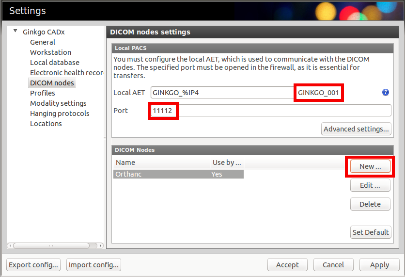

This section explains how to connect the Ginkgo CADx viewer to an Orthanc server, both running on the local computer. First, start Orthanc without specifying a configuration file (i.e. using its default configuration). Then, open the settings pannel of Ginkgo CADx:
Write down the AET and the DICOM port of Ginkgo CADx (in this case,
respectively GINKGO_001 and 11112). Then, create a new DICOM
node corresponding to Orthanc by clicking on the “New…” button,
which raises the following dialog box:
Complete the highlighted fields with the default parameters of
Orthanc, as shown in the screenshot. Do not forget to click on the
“Test connection” button to make sure the C-Echo
succeeds. Stop Orthanc, create a new configuration file, and declare Gingko CADx in the DicomModalities
section, given the parameters you wrote down above:
// The list of the known DICOM modalities
"DicomModalities" : {
"ginkgo" : [ "GINKGO_001", "localhost", 11112 ]
},
Restart Orthanc using this newly created configuration file, and you will be able to do query/retrieve from Gingko CADx through the “PACS Q/R” menu.
{kind=link}
{kind=link}